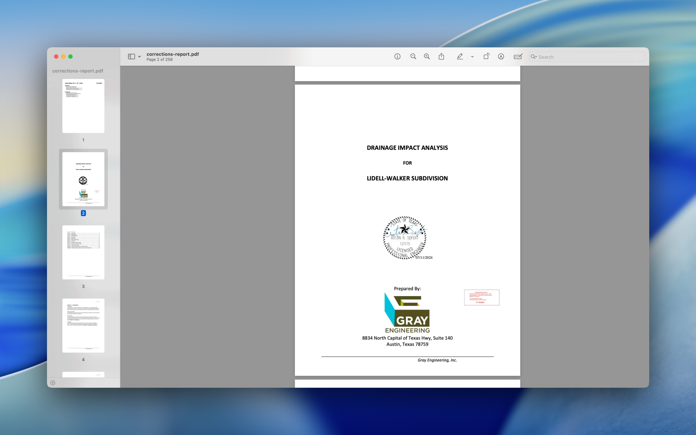

GovWell Plan Review
Modernizing the plan review process for local governments

My Role
Lead Product Designer — UX Design, UI Design, Prototyping, User Research
Team
Peter Borges, Designer
Matt Dyrland-Marquis, Front-End
Tyler Dyrland-Marquis, CTO
Timeline & Status
2 Months, Launched Jan 2025
Overview
This was my first major project after joining GovWell: designing a 0→1 integrated Plan Review experience that would allow government staff to complete an entire permit record—from intake to decision—without leaving our platform.
During early discovery calls, we noticed a major gap: customers were exporting plan sets and switching to third-party tools to complete core review workflows. That created user friction, inconsistent records, and broken audit trails.
Closing this gap became critical to launching a competitive permitting solution.
Outcomes
Challenge
Local governments struggle with outdated, paper-heavy plan review processes that are:
- Time-consuming
- Error-prone
- Non-collaborative
- Lacking transparency for both reviewers and applicants
Reviewers and applicants need a modern, digital workflow that:
- Reduces repetitive tasks
- Centralizes feedback
- Enables faster turnaround
- Provides a single source of truth across departments
Users
Municipal plan reviewers are public servants managing heavy workloads of building applications. They vary significantly in:
- Technical proficiency (from novice to expert)
- Role (planning, fire, engineering, zoning)
- Department size and structure
- Available time
Designing a tool for them required striking the right balance: simple enough for a junior reviewer, powerful enough for a seasoned inspector.
Problems
Problem 1 — Incomplete end-to-end permit workflows
Description: Reviewers couldn't complete plan reviews inside GovWell; they had to export PDFs to external tools. This created data fragmentation, slowed teams down, and made GovWell feel incomplete.
"Every single review, I'm exporting to Bluebeam, marking it up, saving it, re-uploading. It's like GovWell is just a fancy filing cabinet."
Sarah Mitchell, Town of Rolesville, NC
Problem 2 — Inability to give clear, async feedback on plan revisions
Description: Reviewers had no structured way to provide comments or request revisions. This forced them into email threads or sticky notes on printed plans.
"I've got sticky notes on my monitor, a Word doc with comments, and half-finished emails to contractors. Then I forget which version I sent. It's chaos."
Mike Torres, City of Bellbrook, OH
Problem 3 — Long turnaround times
Description: Without digital workflows, review cycles were slow and untrackable. Users couldn't easily identify what changed between versions or who was waiting on whom.
"The applicant says 'I fixed it' but I'm staring at 47 pages trying to spot the difference. Sometimes I just re-review the whole thing because it's faster than hunting."
Jennifer Adams, Town of Easton, CT
Problem 4 — No auditability or accountability of feedback
Description: Feedback was scattered across email, PDFs, physical copies, and shared drives. No centralized record meant no consistency, no oversight, and no reliable history.
"Fire says they approved it. Building says they never saw it. The applicant is furious. And I'm digging through six email threads trying to figure out who dropped the ball."
David Chen, City of Duluth, GA
Solution
01 Comments
To solve end-to-end workflow gaps, we introduced native tools for drawing shapes, adding text annotations, and commenting directly on plan sheets. Reviewers can highlight issues, leave notes, and communicate feedback without exporting to external tools.
02 Checklists
Reviewers can work through standardized checklists tied to specific permit types and code requirements. Checklists ensure consistent reviews across staff, reduce missed items, and provide clear documentation of what was verified.
03 Measurements
Precise measurement tools allow reviewers to verify setbacks, lot coverage, and spatial requirements directly on uploaded plans. Measure distances, areas, and perimeters with a click—no need for scale rulers or manual calculations.
04 Stamp Creation & Management
Inspectors often use stamps for approvals, rejections, or conditional notes. We added custom and agency-provided stamp uploads, drag-to-place functionality, resize and rotation, and audit logging of who applied what stamp and when.
05 Stamping
Once stamps are configured, reviewers can quickly apply them to any location on a plan sheet. Drag-and-drop placement, resizing, and rotation make it easy to position stamps precisely. Every stamp application is logged with timestamps and user attribution for full audit compliance.
06 Automated Corrections Reports
We automated the process of turning markups into structured correction items. Now reviewers can convert annotations into standardized correction reports, send them to applicants, and reduce manual work while ensuring consistency. This cut out hours of manual PDF editing per review cycle.

Iterations
Through weekly feedback sessions with planning and engineering reviewers, we made iterative improvements:
Markup Editing
We added precision resizing controls, expanded color and style options for annotations, and improved the undo/redo system to handle complex markup sequences reliably.
File Overlay
Reviewers needed better tools to compare plan versions, so we built side-by-side version comparison, an overlay transparency slider, and automatic highlighting of changes between uploads.
Learnings
- Meet reviewers where they are. Many aren't designers or engineers—simplicity wins.
- Government workflows depend on accountability. Audit trails weren't optional; they were essential.
- 0→1 features require tight collaboration. Fast cycles with engineering and CTO alignment were crucial to shipping meaningfully in eight weeks.
- Adoption is earned. The easier we made the workflow, the faster teams embraced it.
Conclusion
The Plan Review experience transformed GovWell from a permitting intake tool into a fully integrated review platform. By closing the workflow gap, we increased product stickiness, improved turnaround times, and helped agencies modernize one of the most painful steps in permitting.
Testimonials
"I used to dread resubmittals—opening the PDF, trying to remember what I flagged last time, flipping between tabs. Now I just overlay the versions and it highlights the changes for me. I genuinely look forward to Monday mornings now. Well, almost."
Amanda Rodriguez, City of Brevard, NC
"We had a contractor call to complain about a correction. I pulled up the comment history, showed him the timestamp, his reply, everything. He apologized. That never happened before."
Robert Kim, Fort Myers Beach, FL
"My boss asked why our permit turnaround dropped from 3 weeks to 6 days. I just showed her the checklists. She didn't believe it was that simple."
Lisa Patel, Town of Cape Elizabeth, ME